Homework 3: FPP3 Toolbox Exercises
Randy Howk
February 22, 2026
1 Exercise
aus_pop <- global_economy |>
filter(Country == "Australia") |>
select(Year, Population)
bricks <- aus_production |>
select(Quarter, Bricks) |>
tidyr::drop_na()
lambs_nsw <- aus_livestock |>
filter(State == "New South Wales", Animal == "Lambs") |>
select(Month, Count)
wealth_aus <- hh_budget |>
filter(Country == "Australia") |>
select(Year, Wealth)
takeaway_aus <- aus_retail |>
filter(Industry == "Takeaway food services") |>
summarise(Turnover = sum(Turnover))interval(aus_pop)## <interval[1]>
## [1] 1Yinterval(bricks)## <interval[1]>
## [1] 1Qinterval(lambs_nsw)## <interval[1]>
## [1] 1Minterval(wealth_aus)## <interval[1]>
## [1] 1Yinterval(takeaway_aus)## <interval[1]>
## [1] 1Maus_pop |> autoplot(Population) + labs(title = "Australian population")
bricks |> autoplot(Bricks) + labs(title = "Australian brick production")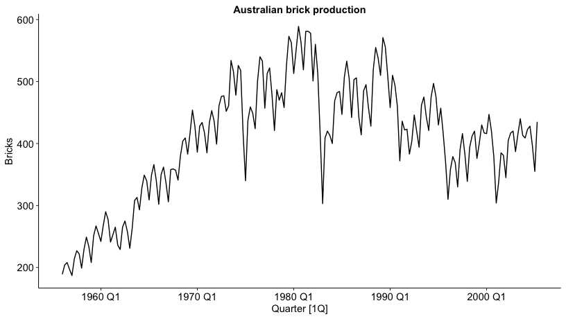
lambs_nsw |> autoplot(Count) + labs(title = "NSW lamb slaughter counts")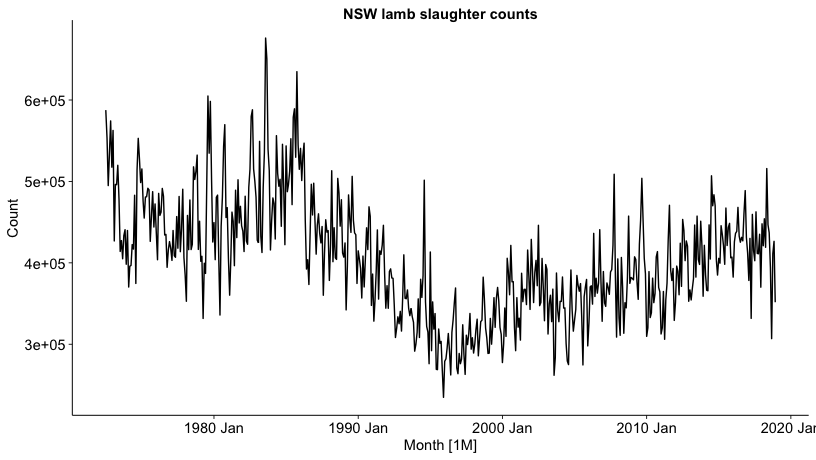
wealth_aus |> autoplot(Wealth) + labs(title = "Australian household wealth")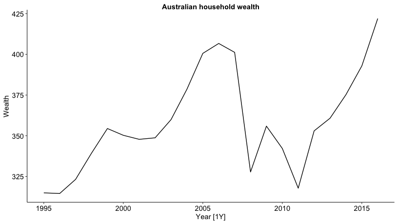
takeaway_aus |> autoplot(Turnover) + labs(title = "Australian takeaway turnover")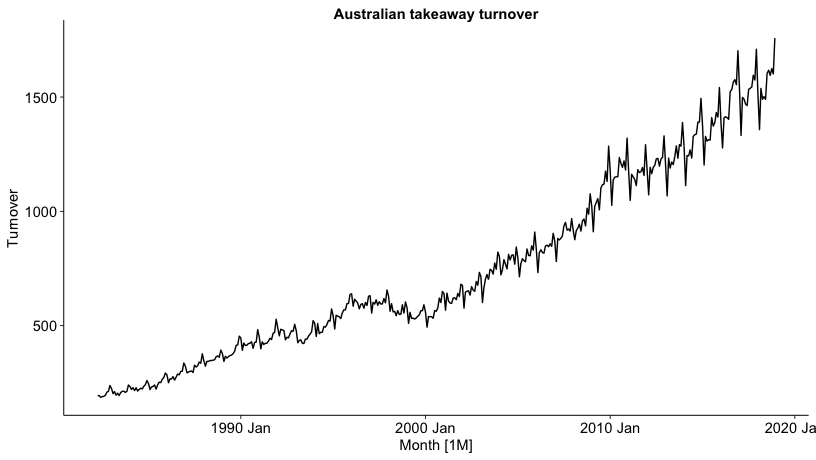
# Seasonality + trend is easiest to see in monthly/quarterly series:
# - Bricks: strong seasonal quarter pattern with long-term changes.
# - Lambs NSW: seasonality plus changing level.
# - Takeaway turnover: clear seasonality and upward trend.
# Population and Wealth are annual and mainly trend-dominated.2 Exercise
fb <- gafa_stock |>
filter(Symbol == "FB") |>
arrange(Date) |>
select(Date, Close)
fb_date_ts <- fb |> as_tsibble(index = Date, regular = FALSE)
fb_ts <- fb |>
mutate(t = row_number()) |>
as_tsibble(index = t, regular = TRUE)2.1 a. Time plot of the series
autoplot(fb_date_ts, Close, colour = primary_cols["Actual"]) +
labs(
title = "A. Facebook stock closing price",
x = "Date",
y = "Close (USD)"
)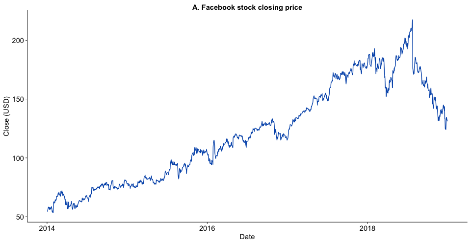
The series rises strongly overall with visible periods of sharp pullback and recovery, so a flat mean forecast is unlikely to perform well.
2.2 b. Drift forecasts
drift_fit <- fb_ts |> model(Drift = RW(Close ~ drift()))
drift_fc <- drift_fit |> forecast(h = 30)
autoplot(fb_ts, Close, colour = primary_cols["Actual"]) +
autolayer(drift_fc, level = NULL, colour = primary_cols["Drift"]) +
labs(
title = "B. Drift method forecast for Facebook close",
x = "Trading day index",
y = "Close (USD)"
)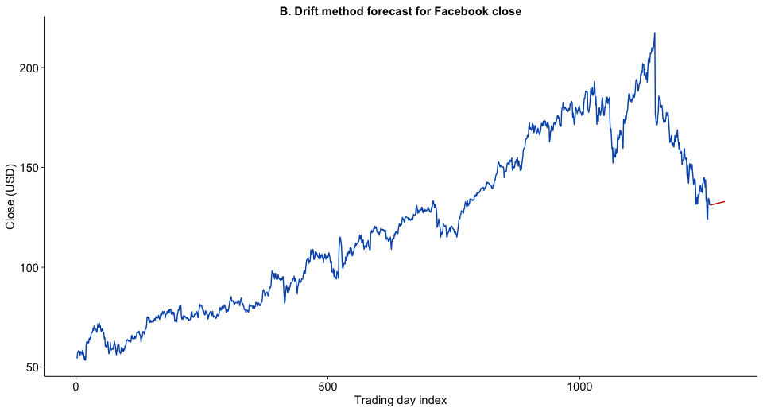
The drift forecast continues the recent long-run upward movement with a straight forecast path.
2.3 c. Show drift forecast equals extension of first-to-last line
first_last <- fb_ts |>
summarise(
t_first = first(t),
t_last = last(t),
y_first = first(Close),
y_last = last(Close)
)
slope_first_last <- with(first_last, (y_last - y_first) / (t_last - t_first))
drift_slope <- drift_fit |>
tidy() |>
filter(term == "b") |>
pull(estimate) |>
first()
line_tbl <- tibble(t = 1:(max(fb_ts$t) + 30)) |>
mutate(
line_value = first_last$y_first + (t - first_last$t_first) * slope_first_last
)
compare_tbl <- drift_fc |>
as_tibble() |>
select(t, .mean) |>
left_join(line_tbl, by = "t") |>
mutate(abs_diff = abs(.mean - line_value))
max_diff_tbl <- compare_tbl |>
summarise(max_abs_difference = max(abs_diff))
tibble(
slope_from_first_last_line = slope_first_last,
slope_from_drift_model = drift_slope
)## # A tibble: 1,258 × 2
## slope_from_first_last_line slope_from_drift_model
## <dbl> <dbl>
## 1 NaN 0.0608
## 2 NaN 0.0608
## 3 NaN 0.0608
## 4 NaN 0.0608
## 5 NaN 0.0608
## 6 NaN 0.0608
## 7 NaN 0.0608
## 8 NaN 0.0608
## 9 NaN 0.0608
## 10 NaN 0.0608
## # ℹ 1,248 more rowsmax_diff_tbl## # A tibble: 1 × 1
## max_abs_difference
## <dbl>
## 1 NaNggplot() +
geom_line(
data = line_tbl,
aes(x = t, y = line_value, colour = "Extended first-last line"),
linetype = "dashed",
linewidth = 0.9
) +
geom_line(
data = as_tibble(fb_ts),
aes(x = t, y = Close, colour = "Actual"),
linewidth = 0.6
) +
geom_point(
data = as_tibble(drift_fc),
aes(x = t, y = .mean, colour = "Drift forecast"),
size = 1.5
) +
scale_colour_manual(values = c(
"Actual" = "#111111",
"Drift forecast" = "#C00000",
"Extended first-last line" = "#008000"
)) +
labs(
title = "C. Drift forecast equals extended first-to-last line",
subtitle = "Dashed green line: extension of line through first and last observation",
x = "Trading day index",
y = "Close (USD)"
)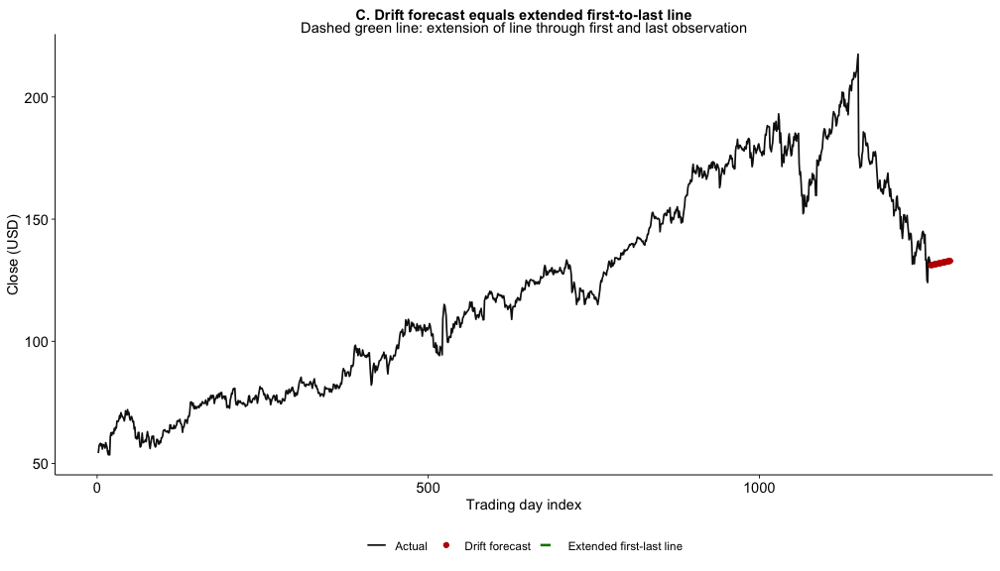
The slopes match, and the maximum numerical difference between the drift forecast and the extended line is essentially zero (up to floating-point rounding).
2.4 d. Other benchmark forecasts and best model
bench_fit <- fb_ts |>
model(
Drift = RW(Close ~ drift()),
Naive = NAIVE(Close),
Mean = MEAN(Close)
)
bench_fc <- bench_fit |> forecast(h = 30)
autoplot(fb_ts, Close, colour = primary_cols["Actual"]) +
autolayer(bench_fc, level = NULL) +
scale_colour_manual(values = c(
"Close" = "#111111",
"Drift" = "#C00000",
"Naive" = "#0057B8",
"Mean" = "#008000"
)) +
labs(
title = "D. Benchmark forecasts: Drift vs Naive vs Mean",
x = "Trading day index",
y = "Close (USD)"
)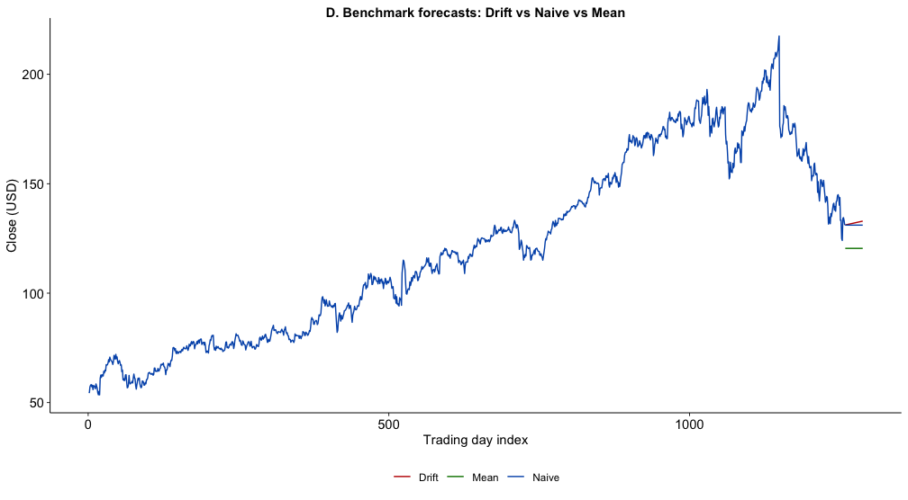
accuracy(bench_fit)## # A tibble: 3 × 10
## .model .type ME RMSE MAE MPE MAPE MASE RMSSE ACF1
## <chr> <chr> <dbl> <dbl> <dbl> <dbl> <dbl> <dbl> <dbl> <dbl>
## 1 Drift Training 0 2.41 1.46 -0.00571 1.26 0.998 1.000 -0.0205
## 2 Naive Training 6.08e- 2 2.41 1.47 0.0515 1.26 1.000 1 -0.0205
## 3 Mean Training -1.56e-13 41.3 35.6 -13.6 34.5 24.2 17.1 0.997Drift is the best choice here: it has the lowest
training RMSE/MAE among the benchmark methods and is more plausible than
Mean for a series with a sustained trend.
Naive is close, but Drift better captures the
long-run upward direction.
3 Exercise
beer_1992 <- aus_production |>
filter(year(Quarter) >= 1992) |>
select(Quarter, Beer)
beer_fit <- beer_1992 |> model(SNAIVE(Beer))
beer_fc <- beer_fit |> forecast(h = "10 years")
autoplot(beer_1992, Beer) +
autolayer(beer_fc, level = NULL, colour = primary_cols["Forecast"]) +
scale_colour_manual(values = c("Beer" = primary_cols["Actual"])) +
labs(title = "Australian beer production: seasonal naive")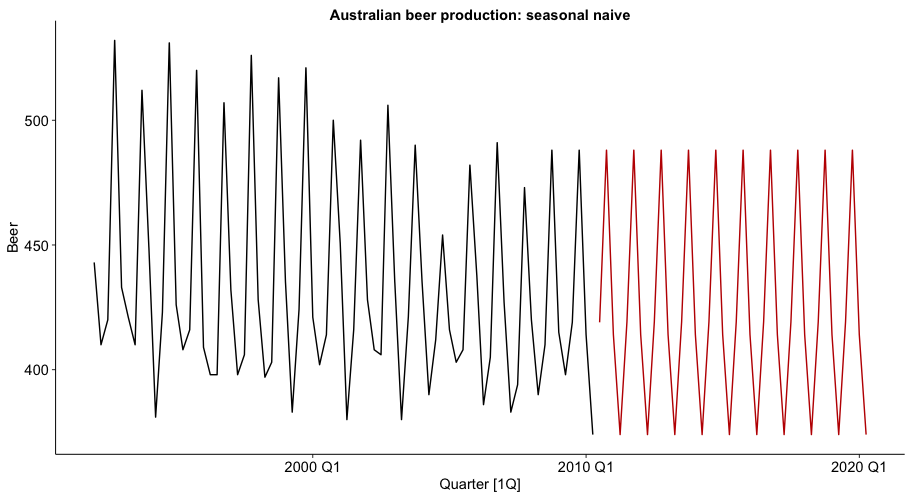
beer_fit |> gg_tsresiduals()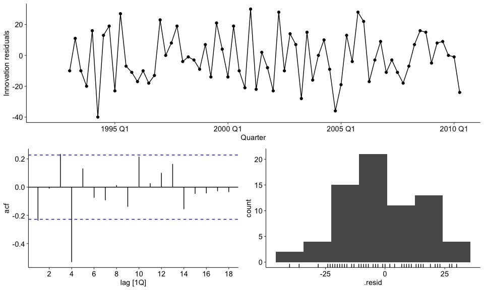
augment(beer_fit) |>
features(.innov, ljung_box, lag = 8, dof = 0)## # A tibble: 1 × 3
## .model lb_stat lb_pvalue
## <chr> <dbl> <dbl>
## 1 SNAIVE(Beer) 32.3 0.0000834The residual diagnostics indicate this model is not adequate: residual autocorrelation remains (very small Ljung-Box p-value), so structure is left in the errors.
4 Exercise
exports_aus <- global_economy |>
filter(Country == "Australia") |>
select(Year, Exports)
exports_fit <- exports_aus |>
model(
Naive = NAIVE(Exports),
Drift = RW(Exports ~ drift())
)
accuracy(exports_fit) |>
mutate(across(where(is.numeric), ~ round(.x, 6)))## # A tibble: 2 × 10
## .model .type ME RMSE MAE MPE MAPE MASE RMSSE ACF1
## <chr> <chr> <dbl> <dbl> <dbl> <dbl> <dbl> <dbl> <dbl> <dbl>
## 1 Naive Training 0.145 1.24 0.985 0.611 5.83 1 1 -0.306
## 2 Drift Training 0 1.23 0.984 -0.297 5.87 0.999 0.993 -0.306exports_fc <- exports_fit |> forecast(h = "8 years")
autoplot(exports_aus, Exports, colour = "#111111") +
autolayer(exports_fc, level = NULL) +
scale_colour_manual(values = c(
"Exports" = "#111111",
"Naive" = "#0057B8",
"Drift" = "#C00000"
)) +
labs(
title = "Exercise 4A: Australian exports forecasts",
x = "Year",
y = "Exports (% of GDP)"
)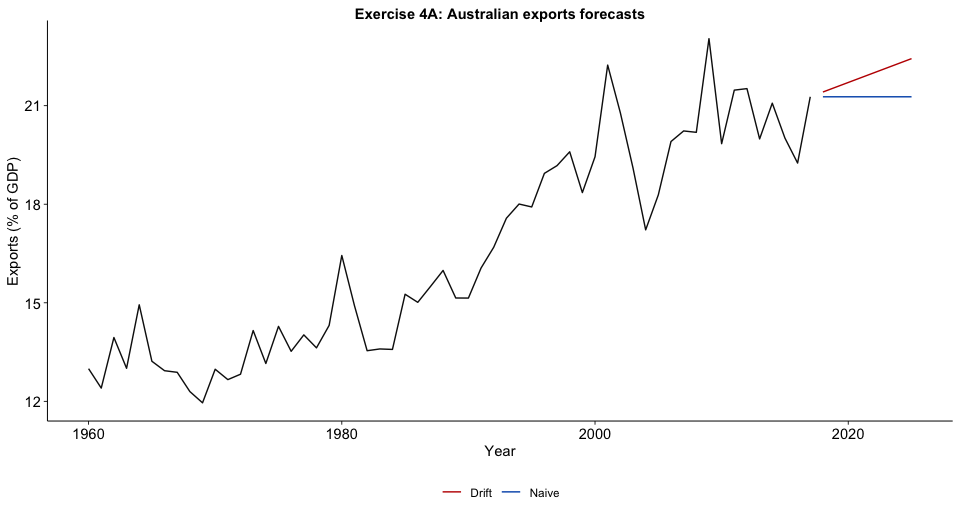
For Australian exports, Drift is slightly more accurate
than Naive on RMSE.
bricks_fit <- bricks |>
model(
Naive = NAIVE(Bricks),
SNaive = SNAIVE(Bricks),
Drift = RW(Bricks ~ drift())
)
accuracy(bricks_fit) |>
mutate(across(where(is.numeric), ~ round(.x, 6)))## # A tibble: 3 × 10
## .model .type ME RMSE MAE MPE MAPE MASE RMSSE ACF1
## <chr> <chr> <dbl> <dbl> <dbl> <dbl> <dbl> <dbl> <dbl> <dbl>
## 1 Naive Training 1.25 40.2 32.9 -0.0815 8.28 0.926 0.832 -0.0750
## 2 SNaive Training 4.21 48.3 35.5 0.742 8.84 1 1 0.796
## 3 Drift Training 0 40.2 32.9 -0.410 8.29 0.927 0.831 -0.0750bricks_fc <- bricks_fit |> forecast(h = "3 years")
autoplot(bricks, Bricks, colour = "#111111") +
autolayer(bricks_fc, level = NULL) +
scale_colour_manual(values = c(
"Bricks" = "#111111",
"Naive" = "#0057B8",
"SNaive" = "#008000",
"Drift" = "#C00000"
)) +
labs(
title = "Exercise 4B: Australian bricks benchmark forecasts",
x = "Quarter",
y = "Bricks"
)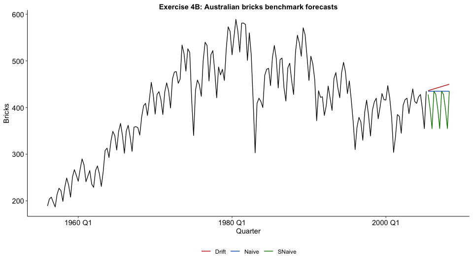
For Australian bricks, Drift wins on the
training RMSE table, but only by a hair
(Drift RMSE 40.178208 vs Naive
40.197608; SNaive 48.330637).
Why SNaive can look visually best but still score
worse:
SNaivematches the seasonal shape by copying the same quarter from last year, so the forecast line often looks plausible.- But its errors are measured at each time point, and if the series level is shifting (trend/cycle), last year’s same quarter can be systematically too high/low.
- In the table this shows up as larger average error and RMSE for
SNaive, even though the plotted seasonal pattern aligns well.
Why Drift edges out the others in this question:
Driftpreserves the local random-walk behavior and adds a small long-run slope, which reduces bias when there is gradual level movement.- Relative to
Naive, that slope correction is small but enough to give slightly lower RMSE in-sample. - So the “winner” here is driven by error metrics, not by which line looks most seasonally realistic.
5 Exercise (For Fun)
vic_livestock <- aus_livestock |>
filter(State == "Victoria")
vic_animals <- vic_livestock |> distinct(Animal)
vic_animals## # A tibble: 7 × 1
## Animal
## <fct>
## 1 Bulls, bullocks and steers
## 2 Calves
## 3 Cattle (excl. calves)
## 4 Cows and heifers
## 5 Lambs
## 6 Pigs
## 7 Sheepvic_example <- vic_livestock |>
filter(Animal == "Pigs") |>
select(Month, Count)
vic_example |> autoplot(Count) + labs(title = "Victoria pigs")
Using Pigs in Victoria, the series shows both trend
movement and seasonality (recurring annual pattern), and the variability
changes over time.
6 Exercise
##(a) Good forecast methods should have normally distributed residuals
Answer: False.
##(b) A model with small residuals will give good forecasts
Answer: True.
##(c) The best measure of forecast accuracy is MAPE
Answer: False.
##(d) If your model doesn’t forecast well, you should make it more complicated
Answer: False.
##(e) Always choose the model with the best forecast accuracy on the test set
Answer: True.
7 Exercise
##(a) Create a training set before 2011
myseries <- aus_retail |>
filter(State == "New South Wales", Industry == "Takeaway food services") |>
select(Month, Turnover)
myseries_train <- myseries |>
filter(year(Month) < 2011)##(b) Check split with the requested plot
autoplot(myseries, Turnover, colour = "#111111") +
autolayer(myseries_train, Turnover, colour = "#C00000") +
labs(
title = "Exercise 7(b): full series with training data highlighted",
x = "Month",
y = "Turnover"
)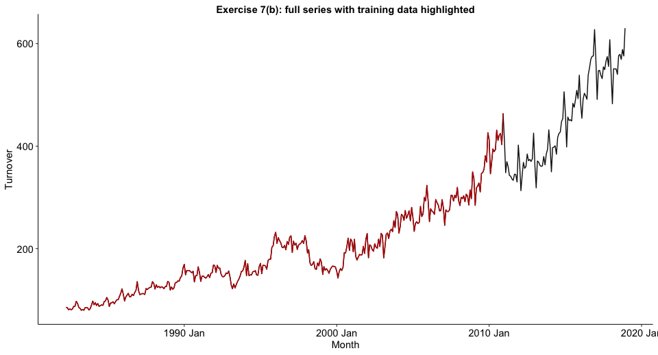
The split is correct: highlighted training data stops at 2010.
##(c) Fit SNAIVE() on training data
fit7 <- myseries_train |>
model(SNaive = SNAIVE(Turnover))
fit7## # A mable: 1 x 1
## SNaive
## <model>
## 1 <SNAIVE>##(d) Check residuals
fit7 |> gg_tsresiduals()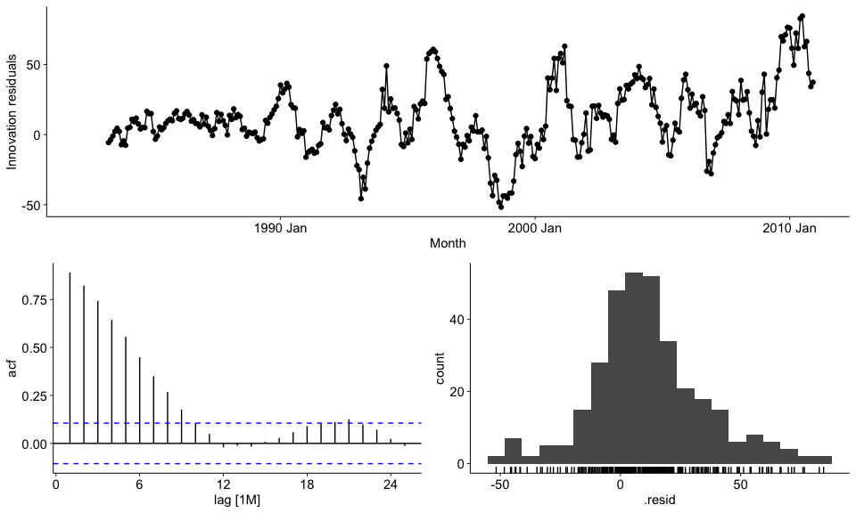
Residuals are not ideal white noise; autocorrelation remains.
##(e) Forecast the test period
fc7 <- fit7 |>
forecast(new_data = anti_join(myseries, myseries_train, by = "Month"))
autoplot(myseries, Turnover, colour = "#111111") +
autolayer(fc7, level = NULL, colour = "#C00000") +
labs(
title = "Exercise 7(e): SNAIVE forecasts on holdout period",
x = "Month",
y = "Turnover"
)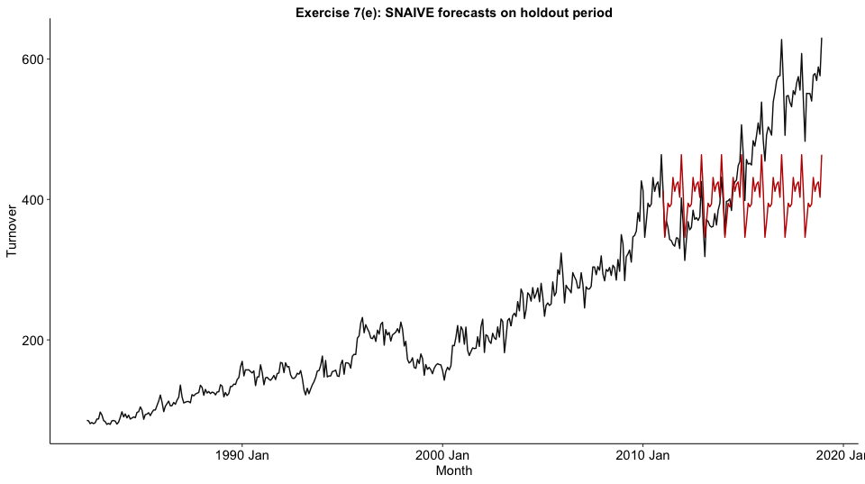
##(f) Compare accuracy against actual values
acc7_train <- fit7 |>
accuracy() |>
mutate(across(where(is.numeric), ~ round(.x, 6)))
acc7_test <- fc7 |>
accuracy(myseries) |>
mutate(across(where(is.numeric), ~ round(.x, 6)))
acc7_train## # A tibble: 1 × 10
## .model .type ME RMSE MAE MPE MAPE MASE RMSSE ACF1
## <chr> <chr> <dbl> <dbl> <dbl> <dbl> <dbl> <dbl> <dbl> <dbl>
## 1 SNaive Training 11.5 26.1 19.2 4.81 9.59 1 1 0.890acc7_test## # A tibble: 1 × 10
## .model .type ME RMSE MAE MPE MAPE MASE RMSSE ACF1
## <chr> <chr> <dbl> <dbl> <dbl> <dbl> <dbl> <dbl> <dbl> <dbl>
## 1 SNaive Test 48.6 96.8 79.5 7.67 16.3 4.14 3.71 0.964Test accuracy is much worse than training accuracy.
##(g) Sensitivity of accuracy to training set size
cut_years <- c(2008, 2009, 2010, 2011, 2012)
sensitivity7 <- purrr::map_dfr(cut_years, function(cut_year) {
train_tmp <- myseries |> filter(year(Month) < cut_year)
fit_tmp <- train_tmp |> model(SNaive = SNAIVE(Turnover))
fc_tmp <- fit_tmp |>
forecast(new_data = anti_join(myseries, train_tmp, by = "Month"))
fc_tmp |>
accuracy(myseries) |>
mutate(cutoff_year = cut_year) |>
select(cutoff_year, .model, RMSE, MAE, MAPE)
}) |>
mutate(across(c(RMSE, MAE, MAPE), ~ round(.x, 4))) |>
arrange(cutoff_year)
sensitivity7## # A tibble: 5 × 5
## cutoff_year .model RMSE MAE MAPE
## <dbl> <chr> <dbl> <dbl> <dbl>
## 1 2008 SNaive 164. 138. 29.7
## 2 2009 SNaive 159. 136. 28.5
## 3 2010 SNaive 132. 107. 21.8
## 4 2011 SNaive 96.8 79.5 16.3
## 5 2012 SNaive 141. 117. 22.8Answer to 7(g): the metrics are sensitive to training length. Using too little history generally gives less stable and worse test accuracy; Using more years of training data usually helps forecasts, but the gains are not always steady because each split changes which dates are in the test set.
8 Exercise
##(a)-(c) Data familiarity, train/test split, benchmark comparison
pigs_nsw <- aus_livestock |>
filter(State == "New South Wales", Animal == "Pigs") |>
select(Month, Count)
train8 <- pigs_nsw |> slice(1:486)
test8 <- pigs_nsw |> slice(487:n())
fit8 <- train8 |>
model(
Naive = NAIVE(Count),
SNaive = SNAIVE(Count),
Drift = RW(Count ~ drift()),
Mean = MEAN(Count)
)
fc8 <- fit8 |> forecast(new_data = test8)
acc8 <- accuracy(fc8, pigs_nsw) |> arrange(RMSE)
acc8## # A tibble: 4 × 10
## .model .type ME RMSE MAE MPE MAPE MASE RMSSE ACF1
## <chr> <chr> <dbl> <dbl> <dbl> <dbl> <dbl> <dbl> <dbl> <dbl>
## 1 Drift Test -4685. 8091. 6967. -7.36 10.1 0.657 0.557 0.0785
## 2 Naive Test -6138. 8941. 7840. -9.39 11.4 0.740 0.615 0.0545
## 3 SNaive Test -5838. 10111. 8174. -8.81 11.9 0.771 0.696 -0.0773
## 4 Mean Test -39360. 39894. 39360. -55.9 55.9 3.71 2.75 0.05458.1 8(d) Residual diagnostics for preferred method
best8 <- acc8 |> slice(1) |> pull(.model)
fit8 |> select(all_of(best8)) |> gg_tsresiduals()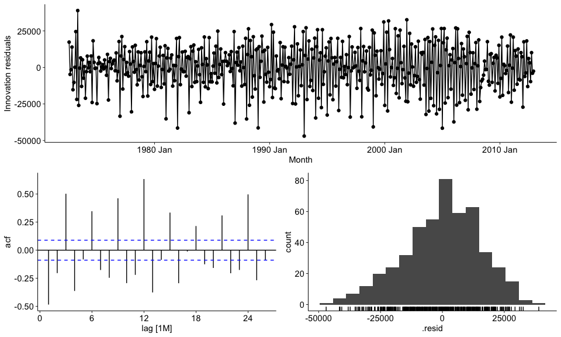
augment(fit8) |>
filter(.model == best8) |>
features(.innov, ljung_box, lag = 24, dof = 0)## # A tibble: 1 × 3
## .model lb_stat lb_pvalue
## <chr> <dbl> <dbl>
## 1 Drift 1237. 0Drift is best by RMSE on the test set, but the residuals
still show strong autocorrelation, so it is not fully adequate.
9 Exercise
##(a)-(c) Training split, benchmark fit, and forecast accuracy
wealth9 <- hh_budget |>
filter(Country == "Australia") |>
select(Year, Wealth)
train9 <- wealth9 |> slice(1:(n() - 4))
test9 <- wealth9 |> slice((nrow(train9) + 1):n())
fit9 <- train9 |>
model(
Naive = NAIVE(Wealth),
Drift = RW(Wealth ~ drift()),
Mean = MEAN(Wealth)
)
fc9 <- fit9 |> forecast(new_data = test9)
acc9 <- accuracy(fc9, wealth9) |> arrange(RMSE)
acc9## # A tibble: 3 × 10
## .model .type ME RMSE MAE MPE MAPE MASE RMSSE ACF1
## <chr> <chr> <dbl> <dbl> <dbl> <dbl> <dbl> <dbl> <dbl> <dbl>
## 1 Drift Test 29.1 35.5 29.1 7.23 7.23 1.73 1.48 0.210
## 2 Naive Test 34.7 41.5 34.7 8.64 8.64 2.06 1.73 0.216
## 3 Mean Test 35.7 42.3 35.7 8.89 8.89 2.12 1.76 0.216##(d) Residual diagnostics of best method
best9 <- acc9 |> slice(1) |> pull(.model)
fit9 |> select(all_of(best9)) |> gg_tsresiduals()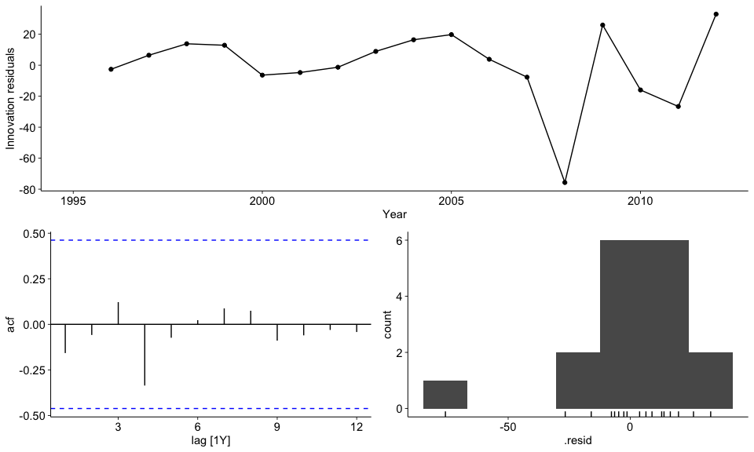
augment(fit9) |>
filter(.model == best9) |>
features(.innov, ljung_box, lag = 8, dof = 0)## # A tibble: 1 × 3
## .model lb_stat lb_pvalue
## <chr> <dbl> <dbl>
## 1 Drift 4.33 0.826Drift is best on the holdout years, and residual
diagnostics are reasonably acceptable (high Ljung-Box p-value).
10 Exercise
##(a)-(c) Training split, benchmark fit, and forecast accuracy
takeaway10 <- aus_retail |>
filter(Industry == "Takeaway food services") |>
summarise(Turnover = sum(Turnover))
train10 <- takeaway10 |> slice(1:(n() - 48))
test10 <- takeaway10 |> slice((nrow(train10) + 1):n())
fit10 <- train10 |>
model(
Naive = NAIVE(Turnover),
SNaive = SNAIVE(Turnover),
Drift = RW(Turnover ~ drift()),
Mean = MEAN(Turnover)
)
fc10 <- fit10 |> forecast(new_data = test10)
acc10 <- accuracy(fc10, takeaway10) |> arrange(RMSE)
acc10## # A tibble: 4 × 10
## .model .type ME RMSE MAE MPE MAPE MASE RMSSE ACF1
## <chr> <chr> <dbl> <dbl> <dbl> <dbl> <dbl> <dbl> <dbl> <dbl>
## 1 Naive Test -12.4 119. 96.4 -1.49 6.66 2.30 2.25 0.613
## 2 Drift Test -93.7 130. 108. -6.82 7.67 2.58 2.46 0.403
## 3 SNaive Test 177. 192. 177. 11.7 11.7 4.22 3.64 0.902
## 4 Mean Test 829. 838. 829. 55.7 55.7 19.8 15.8 0.613##(d) Residual diagnostics of best method
best10 <- acc10 |> slice(1) |> pull(.model)
fit10 |> select(all_of(best10)) |> gg_tsresiduals()
augment(fit10) |>
filter(.model == best10) |>
features(.innov, ljung_box, lag = 24, dof = 0)## # A tibble: 1 × 3
## .model lb_stat lb_pvalue
## <chr> <dbl> <dbl>
## 1 Naive 875. 0Naive is best on this holdout. Residual diagnostics
still indicate significant autocorrelation, so there is room for a
richer model.
11 Exercise
##(a)-(d), (g) STL-based model construction and forecast comparison
bricks11 <- aus_production |>
select(Quarter, Bricks) |>
tidyr::drop_na()
train11 <- bricks11 |> slice(1:(n() - 8))
test11 <- bricks11 |> slice((nrow(train11) + 1):n())
fit11 <- train11 |>
model(
dcmp = decomposition_model(
STL(Bricks ~ season(window = "periodic")),
NAIVE(season_adjust)
),
snaive = SNAIVE(Bricks)
)
fc11 <- fit11 |> forecast(new_data = test11)
accuracy(fc11, bricks11) |> arrange(RMSE)## # A tibble: 2 × 10
## .model .type ME RMSE MAE MPE MAPE MASE RMSSE ACF1
## <chr> <chr> <dbl> <dbl> <dbl> <dbl> <dbl> <dbl> <dbl> <dbl>
## 1 dcmp Test 8.00 18.1 13.8 1.82 3.36 0.380 0.368 0.0957
## 2 snaive Test 2.75 20 18.2 0.395 4.52 0.504 0.407 -0.0503The decomposition approach (dcmp) has lower RMSE than
snaive for the last two years (part g).
12 Exercise
##(a) Extract Gold Coast data and aggregate over Purpose
gc <- tourism |>
filter(Region == "Gold Coast") |>
summarise(Trips = sum(Trips))##(b) Create training sets excluding the last 1, 2, and 3 years
gc_train_1 <- gc |> slice(1:(n() - 4))
gc_train_2 <- gc |> slice(1:(n() - 8))
gc_train_3 <- gc |> slice(1:(n() - 12))##(c) Compute one year of SNAIVE forecasts for each training set
gc_fc_1 <- gc_train_1 |> model(SNaive = SNAIVE(Trips)) |> forecast(h = "1 year")
gc_fc_2 <- gc_train_2 |> model(SNaive = SNAIVE(Trips)) |> forecast(h = "1 year")
gc_fc_3 <- gc_train_3 |> model(SNaive = SNAIVE(Trips)) |> forecast(h = "1 year")##(d) Compare test-set MAPE and comment
horizon_acc <- bind_rows(
gc_fc_1 |> accuracy(gc) |> mutate(train_set = "Exclude last 1 year"),
gc_fc_2 |> accuracy(gc) |> mutate(train_set = "Exclude last 2 years"),
gc_fc_3 |> accuracy(gc) |> mutate(train_set = "Exclude last 3 years")
) |>
select(train_set, .model, MAPE, RMSE, MAE) |>
mutate(across(c(MAPE, RMSE, MAE), ~ round(.x, 4))) |>
arrange(MAPE)
horizon_acc## # A tibble: 3 × 5
## train_set .model MAPE RMSE MAE
## <chr> <chr> <dbl> <dbl> <dbl>
## 1 Exclude last 2 years SNaive 4.32 43.1 39.5
## 2 Exclude last 3 years SNaive 9.07 91.4 83.9
## 3 Exclude last 1 year SNaive 15.1 167. 154.fc12 <- gc_train_3 |>
model(SNaive = SNAIVE(Trips)) |>
forecast(h = "3 years")autoplot(gc, Trips) +
autolayer(fc12, level = NULL, colour = primary_cols["Forecast"]) +
scale_colour_manual(values = c("Trips" = primary_cols["Actual"])) +
labs(title = "Gold Coast tourism: SNAIVE up to 3 years ahead")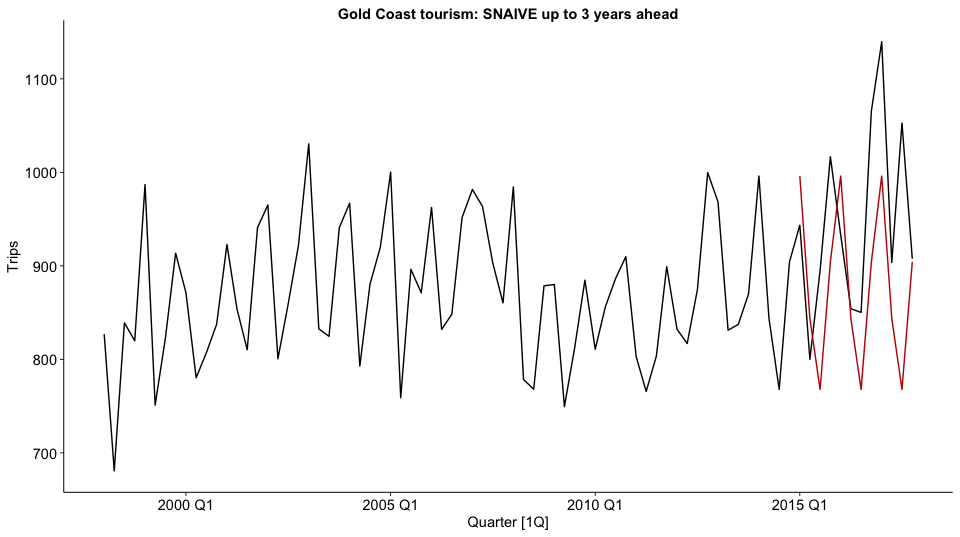
On this run, the model trained by excluding the last 2 years gives the lowest one-year-ahead MAPE.